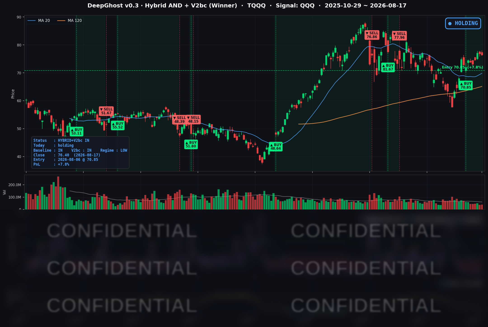

👻 매일 시그널과 히스토리를 홈페이지에서 한눈에 → www.ghostai.co.kr
호르무즈 상황이 금리에 영향을 미쳤고, 엔케리 트레이드 자금 청산 이슈도 남아 있습니다. 예측할 수 없는 시장입니다. 뇌동하지 마시고 룰대로 매매 하세요.
📊 오늘의 매매 신호
| 항목 | 내용 |
|---|---|
| 오늘 할 일 | ✅ 아무것도 안 해도 됩니다 |
| 포지션 상태 | 📈 TQQQ 보유 중 (IN POSITION) |
| 매수 진입일 | 2026-08-06 (8거래일째) |
| 진입가 → 현재가 | $70.85 → $76.40 |
| 현재 포지션 수익 | +7.8% |
TQQQ 시그널 — IN POSITION
현재 상태: 매수 포지션 유지 중 | 이번 포지션 수익률 +7.8%

전략의 TQQQ 트랙은 8월 6일 진입 이후 8거래일째 보유 상태를 유지하고 있습니다. 지수 안에서 마이크로소프트·메타가 3% 넘게 빠졌지만 반도체·메모리의 강세가 그 손실을 대부분 상쇄했습니다.
한 가지 짚어둘 점은 금리 환경이 우호적이 아니라는 것입니다. 이날 장기 금리는 오히려 올랐고 변동성 지수도 상승했습니다. 그럼에도 나스닥의 가격 흐름 자체가 아직 꺾이지 않았기에 청산 조건이 성립하지 않았습니다. 뒤집어 말하면, 지수를 떠받치던 상쇄 구조가 무너지는 순간이 이 포지션의 진짜 위험 구간입니다.
오늘 미국 시장 — 시황 요약
지수 마감
| 지수 | 종가 | 등락률 |
|---|---|---|
| S&P 500 | 7,745.06 | -0.52% |
| 나스닥 종합 | 26,644.91 | -0.32% |
| 다우존스 | 53,459.78 | -0.51% |
| 러셀 2000 | 3,057.54 | -0.35% |
지수만 보면 얕은 조정이지만, 안을 들여다보면 전혀 다른 그림입니다. S&P 500 구성 종목 505개를 전수 집계한 결과 상승 128 / 하락 374로 오른 종목은 넷 중 하나(25.3%)뿐이었고, 중간값 종목의 등락률은 -0.94%였습니다. 지수를 떠받친 것은 소수의 대형 반도체주였고, 나머지 대다수는 지수보다 훨씬 크게 밀렸습니다.
국채 금리 동향
| 만기 | 수익률 | 전일 대비 |
|---|---|---|
| 3개월 | 3.703% | +0.6bp |
| 10년 | 4.724% | +2.8bp |
| 30년 | 5.309% | +4.4bp |
장단기 스프레드(10년 - 3개월)는 +102.1bp로 커브는 정상적인 우상향을 유지했고 경기 침체를 경고하는 역전은 없습니다. 핵심은 만기가 길수록 더 많이 올랐다는 점입니다. 30년물 5.309%는 2007년 이후 19년 만의 최고치입니다.
주목할 부분은 이 상승의 원인이 경기 과열이 아니라는 것입니다. 불어난 나랏빚, 장기물 발행 물량 부담, 목표치를 5년째 웃도는 물가, 그리고 AI 기업들의 대규모 채권 조달이 장기 자금 수요를 잠식한다는 우려가 겹친 결과입니다. 단기 금리는 거의 제자리인데 장기 금리만 밀려 올라가는 조합은, 먼 미래의 이익으로 평가받는 자산에 집중적인 부담을 줍니다. 실제로 이날 소프트웨어 업종이 -2.83%로 전 업종 최하위였습니다.
연준 발언 & 금리 패스
8월 17일에는 연준 인사의 공식 연설도, 주요 경제지표 발표도 없었습니다. 현 국면은 금리를 내리는 완화 사이클이 아니라 추가 인상 여부를 저울질하는 매파적 동결입니다. 7월 회의에서 금리를 3.50~3.75%로 동결했지만, 위원 3인이 "지금 올려야 한다"며 반대표를 던졌습니다.
9월 회의(9/15~16)에 대한 시장 프라이싱은 동결 약 68% / 0.25%p 인상 약 32%입니다. 지난주 소비 지표 부진으로 후퇴했던 인상 기대가 이날 유가 급등으로 다시 자극받았습니다. 이번 주 최대 관문은 8/19(수) 오후 2시(미 동부시간) 공개되는 7월 FOMC 의사록으로, 반대표 3인의 강도를 확인하는 자리입니다. 워시 의장의 취임 후 첫 잭슨홀 연설은 8/27~29에 예정돼 있습니다.
오늘의 핵심 이슈
- 중동 리스크 재점화 — 6월에 서명된 미·이란 60일 양해각서가 8월 17일 만료됐습니다. 호르무즈 해협 통항은 사실상 마비돼 일요일 통과 선박이 0척이었습니다(직전 주말 31척). 유가 +3.2%, 금 +2.1%, 변동성 지수 +6.6%가 한 방향으로 정렬했습니다.
- AI 투자의 이자 청구서 — 모건스탠리가 대형 클라우드 기업의 신용도를 경고했습니다. 마이크로소프트는 올해 1,900억 달러 투자 계획을 내놨지만 벌어들이는 잉여현금은 670억 달러 수준으로, 차액은 빌려야 합니다. 하필 빌리는 값(장기 금리)이 19년래 최고입니다. 이날 마이크로소프트는 -3.04% 하락했습니다.
- 엔비디아의 역설 — 같은 날 엔비디아는 오하이오에 최대 1,050억 달러 규모의 데이터센터 신용 보증 딜을 발표했습니다. 그런데 주가는 -0.07%, 사실상 보합이었습니다. 시장의 질문이 "얼마나 팔았나"에서 "그 돈은 누가 대나"로 옮겨갔다는 신호로 읽힙니다.
변동성 & 투자심리
- VIX (변동성 지수): 15.19 (전일 14.25 → +6.6%). 지난주 내내 진행되던 변동성 진정 흐름이 하루 만에 되돌려졌습니다. 다만 15 안팎은 여전히 역사적으로 낮은 구간이며 공포 국면은 아닙니다.
- 공포탐욕지수: 탐욕(Greed) 구간 유지. 8/17 정확한 수치는 신뢰할 만한 출처에서 확인되지 않아 표기하지 않습니다(직전 확인치는 8/14의 65).
전반적인 심리는 중립~경계로, 8월 14일의 "중립~낙관"에서 한 단계 물러섰습니다. 지수 낙폭은 얕았지만 시장 폭이 극도로 빈약했고 변동성과 유가가 함께 올랐습니다. 리스크 회피라기보다는 주도주가 통째로 바뀐 날에 가깝습니다.
매크로 & 원자재
- 유가: WTI $85.05 (+3.22%), Brent $91.14 (+2.96%)
- 금: $4,470.50 (+2.06%)
유가와 금이 나란히 급등했습니다. 공급 차질 우려, 안전자산 수요, 물가 헤지 수요가 한꺼번에 반영된 흐름입니다. 에너지발 물가 재점화는 연준의 매파 진영에 명분을 더해주기 때문에, 금리 경로와도 직접 연결되는 변수입니다.
주요 종목 동향
| 종목 | 종가 | 등락률 | 비고 |
|---|---|---|---|
| AAPL | 305.59 | -0.11% | 방어적 보합 |
| NVDA | 225.01 | -0.07% | 1,050억 달러 규모 데이터센터 딜 발표에도 보합 |
| MSFT | 480.35 | -3.04% | 대형 클라우드 신용도 경고, 투자·조달 부담 부각 |
| GOOGL | 344.00 | -0.55% | 대형 기술주 동반 약세 |
| META | 568.97 | -3.54% | 29개 주 법무장관 소송 제기 |
| AMZN | 261.31 | -0.51% | 시총 3조 달러 터치 후 되돌림 |
| TSLA | 339.30 | -0.87% | 대형 기술주 동반 약세 |
| NFLX | 76.02 | -2.74% | 3분기 가이던스 부담 |
| AVGO | 392.43 | -0.14% | 전 거래일 급락 후 진정, 반도체 랠리에는 미참여 |
| QCOM | 162.18 | -2.18% | 실적 발표 후 눈높이 조정 지속 |
| INTC | 103.49 | +0.97% | 반도체 온기 일부 수혜 |
| MU | 1,011.75 | +4.13% | 1,000달러 재돌파, 메모리 수급 타이트 전망 |
이날 업종별로는 메모리·스토리지(+5.1%), 광통신(+4.4%), 반도체 장비(+4.0%)가 시장을 이끈 반면 소프트웨어(-2.8%), 필수소비재(-2.4%), 소비재 유통(-2.3%)이 밀렸습니다. "AI 소프트웨어와 먼 미래의 현금흐름"에서 "AI 하드웨어와 지금 당장의 실물"로 무게가 옮겨간 하루로 정리할 수 있습니다.
Ghost.AI — Quantitative AI Investment
Model: DeepGhost v0.3 | Transformer-Based Deep Learning
Coverage: 13 tickers | Updated every trading day after US market close
⚠️ 본 자료는 정보 제공 목적으로만 작성되었으며 투자 권유가 아닙니다. 모든 투자의 책임은 투자자 본인에게 있습니다. 과거 성과가 미래 수익을 보장하지 않습니다.
[유의사항]
- 본 서비스는 불특정 다수를 대상으로 발행되는 단방향 정보 제공 서비스이며, 투자자 개인의 재산 상황·투자 목적·위험 선호도를 반영한 개별 투자 조언이 아닙니다.
- 고스트에이아이 주식회사는 고객과 쌍방향 의사소통(개별 상담, 맞춤형 자문 등)을 제공하지 않습니다.
- 본 콘텐츠는 투자 권유 또는 매매 주문의 청약·청약의 권유에 해당하지 않으며, 최종 투자 판단 및 그에 따른 손익의 책임은 전적으로 투자자 본인에게 있습니다.
고스트에이아이 주식회사